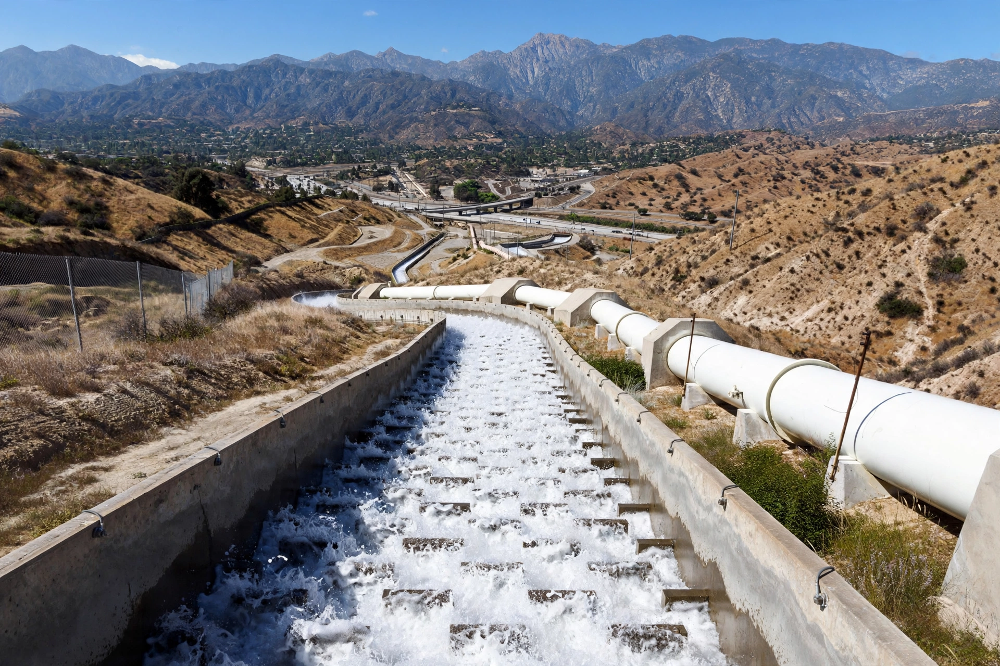

Los Angeles Aqueduct
From Wikipedia, the free encyclopedia
| Locale | Owens Valley to Los Angeles, California |
|---|---|
| Length | 233 mi (375 km) |
| Construction | 1908–1913 |
| Opened | 5 November 1913 |
| Chief engineer | William Mulholland |
| Owner | Los Angeles Department of Water and Power |

The Los Angeles Aqueduct system, comprising the First Los Angeles Aqueduct (Owens Valley Aqueduct) and the Second Los Angeles Aqueduct, is a water conveyance system operated by the Los Angeles Department of Water and Power. The aqueduct delivers water from the Owens River in California's Eastern Sierra Nevada to Los Angeles, entirely by gravity.
History
Conceived by Fred Eaton and engineered by William Mulholland, the project was authorized after Los Angeles voters approved bonds in 1905 and 1907. Construction employed as many as 5,000 workers and involved 164 tunnels. The aqueduct was dedicated on 5 November 1913, when Mulholland famously declared, "There it is. Take it!" The diversion devastated farming in the Owens Valley, fueling the California water wars; valley residents dynamited the aqueduct several times in the 1920s. The St. Francis Dam, built by Mullholland to store aqueduct water, collapsed catastrophically in March 1928, killing at least 431 people and effectively ending Mullholland's career. A second aqueduct followed the same route in 1970. Diversion of tributaries also caused Mono Lake's level to drop precipitously, prompting landmark public-trust litigation in the 1980s and 1990s.